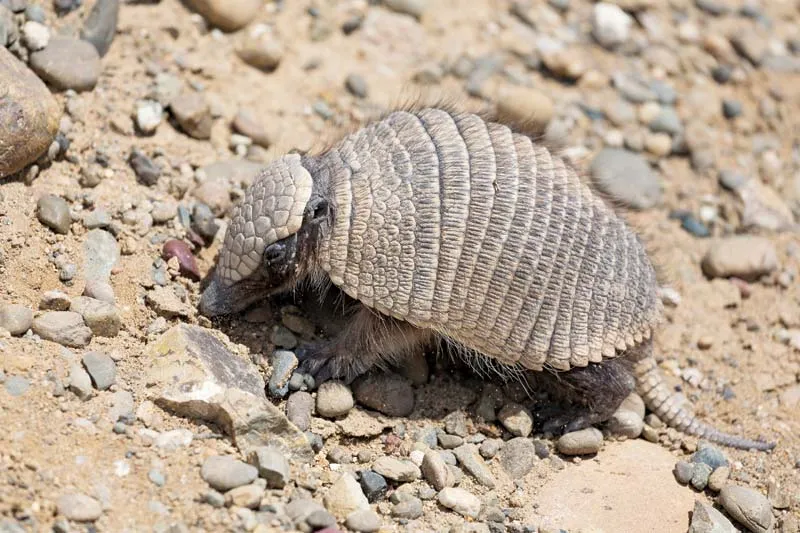

Eating Habits
Where They Live
Life Cycle
Why I Love Armadillos
Eating Habits
- Nighttime Foragers: Armadillos are nocturnal, searching for food at night using a strong sense of smell.
- Diet: They primarily eat insects, grubs, and other small invertebrates, but occasionally consume fruits and plants.
- Sticky Tongue: Their tongues are long and sticky, enabling them to capture and consume insects effectively.
Where They Live
- Burrow Dwellers: Nine-banded armadillos dig extensive burrows, sometimes up to 15 feet long with multiple entrances.
- Warm Regions: They thrive in warm climates and are commonly found in the southern U.S., Central America, and South America.
- Adaptability: These armadillos can be found in forests, grasslands, and sometimes suburban areas.
Life Cycle
- Reproduction: Nine-banded armadillos are known for giving birth to identical quadruplets.
- Lifespan: In the wild, they typically live between 7 and 20 years, depending on conditions and predation.
- Growth: Young armadillos grow quickly and are ready to leave the burrow within a few months.
Why I Love Armadillos
- Stuffed Animal: I had a stuffed animal given to me by my aunt when I was little.
- Looks: They have an awesome and distinctive look about them.
- Personality: They are shy and timid, but they are very curious creatures.